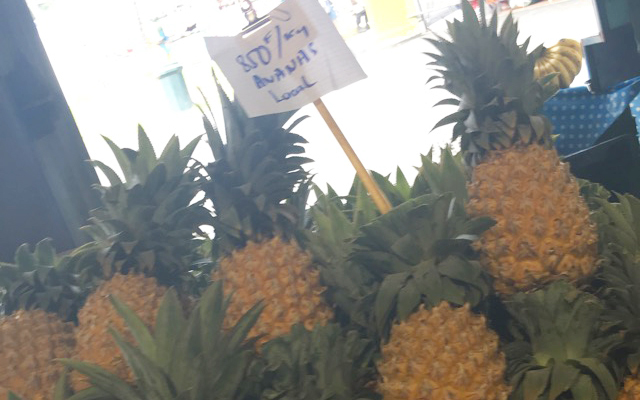
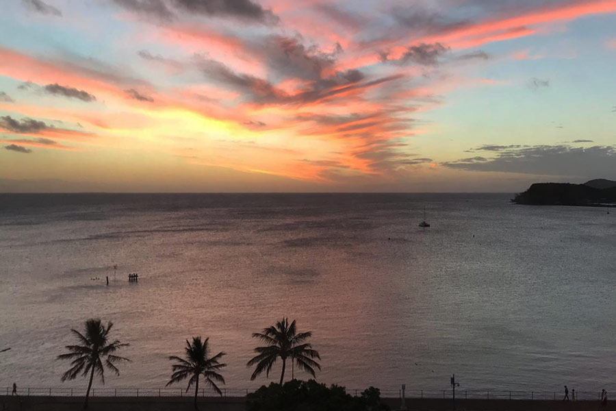

Tourist Spots
Phare Amédée

Visible from the footpaths of Ansa Vata, this island is dominated by its towering white lighthouse. Built in 1865 the lighthouse provided ships with safe passage through a small break in the reef close by. Although ships no longer enter through this break, the island has become a must-do day trip for travelers. Take a private boat or go as part of a tour to spend a day on the island, with plenty of activity options – ogle at turtles from the glass-bottomed boat, visit the reef break, swim and snorkel. Most importantly climb the lighthouse for views across the lagoon. Bookings on package tours include a delicious traditional buffet lunch including New Caledonia and Tahitian fish dishes and desserts.
Musée de la Nouvelle Calédonie
Tourists shouldn’t leave New Caledonia without an appreciation and understanding of Kanak culture. Kanaks – the indigenous population of New Caledonia – lived a basic, subsistence lifestyle prior to the arrival of the French. The museum is home to examples of their huts, artwork, clothing and farming practises. The museum also has a smaller section on other Pacific cultures drawing fascinating cultural parallels with Fiji, Vanuatu and Papua New Guinea. Musée de la Nouvelle Calédonie offers a snapshot of Kanak culture often overlooked by other tourist centers.
Place des Cocotiers
This is the heart of the city. The square slopes gently from east to west and at the top is a band rotunda, a famous landmark dating back to the late 1800s. Place des Cocotiers is the perfect spot to watch the world go by. Near the band rotunda there’s a popular pétanque pitch and a giant chessboard. Down the other end it’s like a lush botanical garden, with palms and large spreading trees. There's free wi-fi throughout the square. Regular concerts and street markets are held in Place des Cocotiers. Held twice a month, the popular Jeudis du Centre Ville street market has a different theme each time.
Anse Vata
Orientated east–west, this popular beach is a hotspot for visitors to Noumea, with hotels, restaurants, shopping and other attractions. Only 10 minutes from the city centre, the locals relax here too, especially on the petanque courts next to the beach. On a breezy day at Anse Vata, you can watch the colourful kite- and windsurfers skimming up and down the bay. It's only five minutes by taxiboat from here out to Île aux Canards.
What to Eat
Eating in New Caledonia is an absolute delight. Outdoor markets burst with colour and life, and there’s always a little surprise to be found, such as plump, just-baked chocolate cake for sale in a remote regional market. In restaurants and even fast-food snack bars, even the simplest-sounding dish will be a taste-sensation. As in most other Pacific countries, New Caledonia’s staple foods are fish, coconut, banana, taro, sweet potato and yam.
While there’s a decent range of fruit, New Caledonia does not have the abundance of tropical delights you might expect on a Pacific island and, in large supermarkets, imported fruits usually outnumber local produce. Seasonal fruits include avocados, passion fruit, mangoes, pineapples, custard apples, watermelons and citrus fruits such as oranges and pomelos. Bananas, coconuts and pawpaws are available year-round.
Weather
New Caledonia has a beautiful semi-tropical climate. The weather is consistent all year round, despite distinct warmer and cooler months. Temperatures average 24°C, dropping to 20-22°C in the cooler months (June/July/August) and rising up to 28° in the warmer months (December/January/February/March).
When is the best time to visit New Caledonia?
Peak travel times to New Caledonia from Australia tend to sit in the middle of both the seasons (between September and December)—when the temperatures are mild, the rainfall is low, and there is less humidity! The best time to visit New Caledonia, however, depends on how you want to spend your time there. If you plan on an active holiday, the cooler months are ideal. Hikers tend to avoid the summer rains, as do whale watchers, divers, and snorkelers (visibility is best between April and November). Foodies and cultural enthusiasts can withstand a little rain. There are plenty of festivals, museums, and art galleries to check out during the summer months.
Gallery
Here are a collection of photos taken in Noumea, New Caledonia.